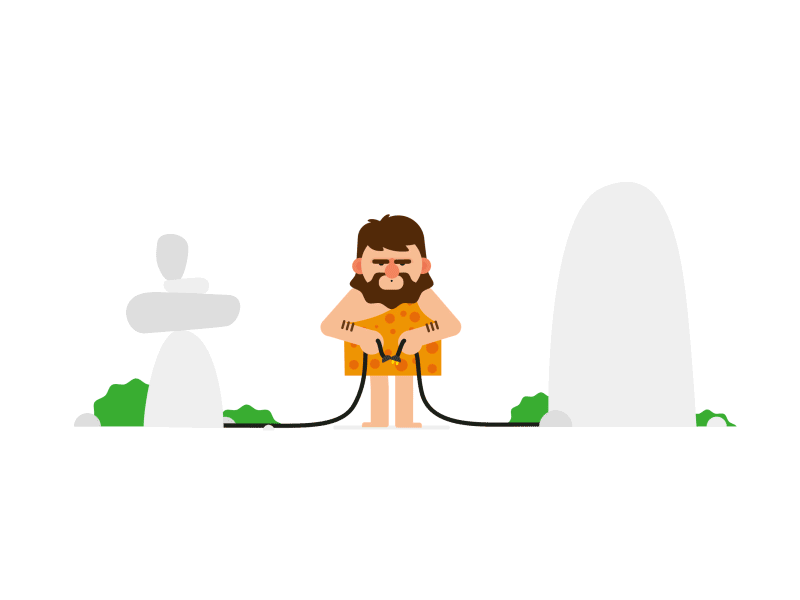

4
0
4

You like You're
Lost !
“This page was not found”
. Who doesn t know these error pages? But why does the page always have to look boring? Here you can find five creative 404 error pages at Codepen
GO back